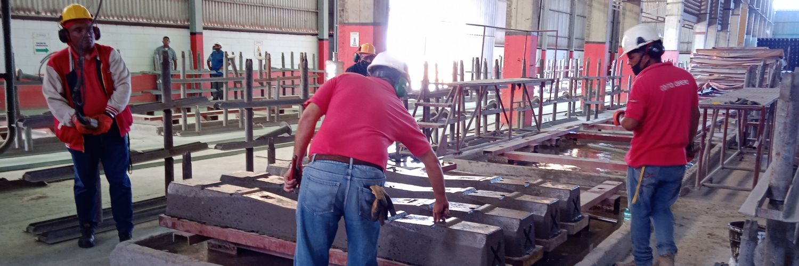

Somos INFERCA, una empresa socialista de Insumos Ferroviarios, elaboradora de durmientes de concreto postensado para la vía férrea de diseño DYWIDAG, única en Latinoamérica. Estamos ubicadados estratégicamente en el Estado Lara, esta situación geográfica nos garantiza una mejor distribución de nuestros productos, traduciéndose en una reducción significativa de costos y ahorro en los tiempos de entrega a nuestros clientes.
